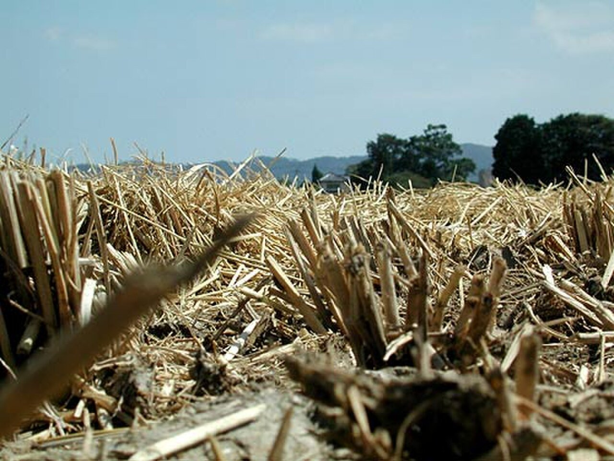

日光溫室曬穀：讓稻穀曬曬太陽
收成之後，稻穀還要走多遠？

收成，不是終點
收成之後，稻穀還有一段路要走。
它會先來到日光溫室，慢慢曬乾，再變成你碗裡的那一口米。
跟著稻穀走一趟

倒掛，慢慢乾
把稻束倒掛起來，讓風和陽光慢慢帶走水分。
比起機器快速烘乾，這樣要多花好幾倍的工。
【待查證】提案寫「倒掛讓稻桿養分回流米粒」，請向農場確認原理後再寫成事實。
請放一段曬穀短影片：自己拍攝（取得同意），或嵌入提案列出的「日光米 光在里山下」YouTube 影片。